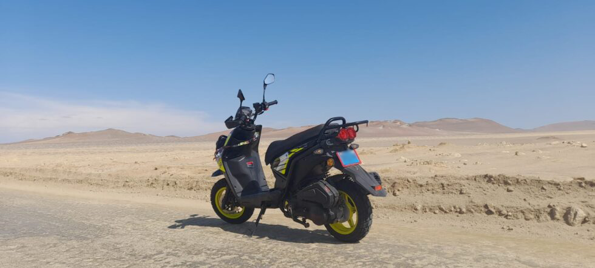
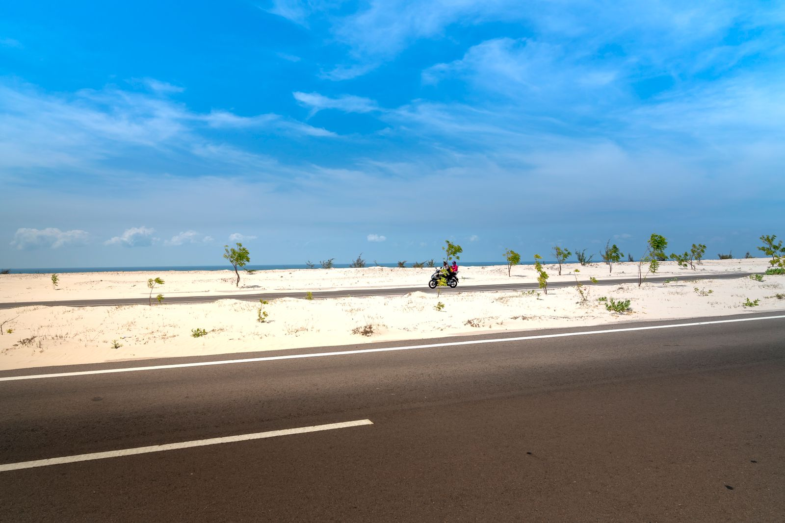

Paracas National Reserve Circuit: how to explore it by scooter, bike or on foot

The Paracas National Reserve has a coastal circuit of viewpoints and beaches that you can explore on your own: by scooter or motorcycle, by bicycle, or even on foot between nearby points. Here's the exact map with every stop and the tips you need to do it safely.
Why explore the reserve on your own?
This circuit is perfect for independent travelers, backpackers, and tour agencies that want to offer their clients a self-guided route, without relying on a closed tour. The whole coastal desert is well signposted, access is through the Reserve's Control Gate, and from there the circuit is a one-way route, stopping at each viewpoint.
3 ways to explore the circuit
1. By scooter or motorcycle
It's the most popular way among travelers staying in Paracas. You can rent a motorcycle or scooter in town and ride the 30+ km circuit in 2 to 3 hours with photo stops.
- Best for: those who want full freedom of schedule and don't want to depend on a group.
- Keep in mind: wear a helmet, carry enough fuel (there are no gas stations inside the reserve), and use sunscreen.
- Loose sand sections: ride carefully near the viewpoints, especially at Red Beach and Lagunillas.
2. By bicycle

The circuit road is a mix of asphalt and compact dirt track, perfect for a mountain or gravel bike. It's a demanding ride due to the sun and wind, but very rewarding.
- Best time: early morning, before the temperature and wind pick up.
- Bring: at least 2 liters of water per person, since there are no shops inside the reserve.
- Distance: you can shorten the route by visiting only the viewpoints closest to the Control Gate.
3. On foot
If you don't have a vehicle, you can walk between the points closest to the Control Gate, such as the Fossil Site and a few viewpoints near the shore. For the full circuit, walking isn't recommended due to the distances between beaches.
- Best for: those staying near the entrance, or combining walking with transport for the rest of the circuit.
- Bring: water, a hat, and comfortable footwear for sand.
Map and stops along the circuit
Here's the full map with every stop of the circuit, in the order they're visited from the Control Gate:
- Control Gate of the Paracas National Reserve — entrance and ticket payment.
- Fossil Site — fossilized marine remains a few minutes from the entrance.
- Playa Supay Viewpoint — views over this hidden beach.
- La Catedral (Viewpoint) — the reserve's most iconic rock formation.
- Yumaque Beach — one of the most visited beaches on the circuit.
- Istmo Viewpoint and Istmo Viewpoint II — overlooks of the strip of land that separates the sea from the bay.
- Red Beach Viewpoint — views of the famous red-sand beach.
- La Mina Beach — a classic stop to rest and swim.
- Lagunillas — a fishing cove where you can eat fresh seafood at the end of the route.
Practical tips before you go in
- Entrance fee: paid in cash at the Control Gate.
- Fuel and water: stock up before entering, there are no gas stations or shops inside the reserve.
- Sun protection: the coastal desert sun is strong even on cloudy days.
- Respect the wildlife and flora: it's a protected natural area, stay on the marked roads.
- Cell signal: it's limited in several stretches, download the map before entering in case you need it offline.
Prefer to go with a certified guide?
At SolyMar Paracas we also organize the full Paracas National Reserve route, transport and guide included.
BOOK NOWYou might also be interested in: Paracas National Reserve tour or see more from our blog.